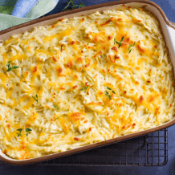
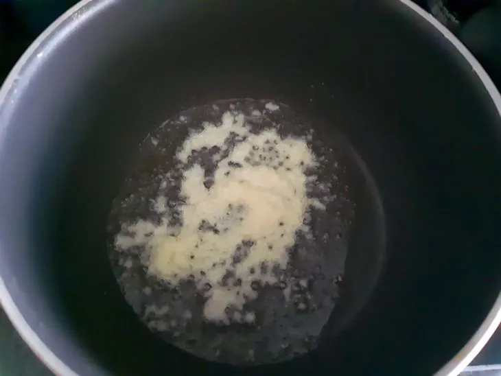

-
57 receitas com frango que são deliciosas e fáceis de preparar
-
 42 receitas com peito de frango práticas e irresistíveis
42 receitas com peito de frango práticas e irresistíveis
-
 32 receitas de filé de frango para variar o cardápio do dia a dia
32 receitas de filé de frango para variar o cardápio do dia a dia
-

10 receitas de fricassê de frango cremoso que fazem sucesso na mesa
 Lanche de forno com frango
Lanche de forno com frango
Ingredientes
Modo de preparo
Reúna todos os ingredientes;

Em uma panela, esquente 3 fios de
óleo e refogue a cebola até murchar;
Adicione o alho, o tomate e refogue;
Tempere com sal, pimenta, colorau
e misture;
Acrescente o extrato de tomate e
deixe refogar por 1 minuto;
Coloque o frango desfiado, misture e
diminua o fogo;
 Adicione o milho, a ervilha, o cheiro
Adicione o milho, a ervilha, o cheiro
-verde e misture;
Aumente o fogo, acrescente o leite
(com o amido de milho dissolvido
), misture e mexa sem parar até
engrossar e começar a borbulhar
(acerte o sal, caso precise);
Em uma forma (36cmX26cmX05cm)
untada com manteiga, forre o fundo
com o pão de forma;
Faça uma camada bem generosa
de recheio, espalhando bem, cubra
com fatias de queijo e faça mais
uma camada de pão. Repita o
processo mais uma vez;
Decore com rodelas de tomate
, salpique orégano e leve ao forno
preaquecido a 200 ºC por cerca
de 20 minutos ou até gratinar;
Agora é só servir. Bom apetite!